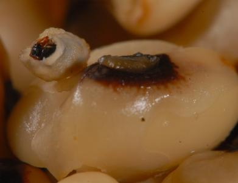
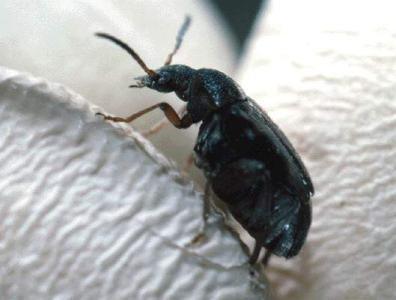

Cowpea seed beetle
Cowpea seed beetle


{kind=link}
{kind=link}
{kind=link}
Callosobruchus spp. (Callosobruchus maculatus, Callosobruchus chinensis)
Coleoptera: Bruchidae
Cowpea weevil, cowpea seed weevil, spotted cowpea bruchid / Chinese bruchid, Adzuki bean beetle
Geographical Distribution in Africa
Geographical Distribution of Cowpea seed beetles in Africa (red marked)
General Information on Pest and Damage
Damage
Callosobruchus beetles are important pests of pulses. Infestation commonly begins in the field, where eggs are laid on maturing pods. As the pods dry, the pest's ability to infest them decreases. Thus, dry seeds stored in their pods are quite resistant to attack, whereas the threshed seeds are susceptible to attack throughout storage. Infestation may start in the pods before harvest and carry over into storage where substantial losses may occur.
Levels of infestation in storage are strongly influenced by the type of storage structure employed and the variety of seed. Storage structures that maintain high levels of moisture in seeds are more prone to high levels of infestation. The value of dried pulses is strongly affected by levels of bruchid attack. In Nigeria, it has been estimated that 3% of the annual production in 1961/62 was lost due to attack by Callosobruchus maculatus.
Host range
Cowpea bruchids are major pest of cowpeas, pigeon peas, soybean, green gram and lentils.
Symptoms
In the early stages of attack the only symptoms are the presence of eggs glued to the surface of the pulses. As development occurs entirely within the seed, the immature stages can normally not be seen. However, they can be detected after pupation takes place; although the seed coat of the bean is still intact, a round 1 to 2 mm window is apparent at the location where the beetle is pupating. The adults emerge through these windows leaving round holes in the grain that are the main evidence of damage.
Affected plant stages
Fruiting stage and post-harvest.
Affected plant parts
Seeds.
Biology and Ecology of Cowpea Seed Beetles
Eggs are small (0.75 mm long), clear, shiny and smooth, and oval or spindle shaped. They are firmly glued to the surface of pods and pulses. If the pods have opened, eggs are laid directly onto the seeds. Eggs are small, smooth and have domed structures with oval, flat bases. When newly laid they are translucent grey and inconspicuous. Upon hatching the empty eggs shells are white, and clearly visible to the naked eye. Eggs hatch within 5-6 days of oviposition.
The larvae are whitish and somewhat C-shaped with small heads. Upon hatching, they bite through the base of the eggs and bore into the seeds where they spend the whole lifecycle feeding on the seed. The larvae pupate inside the seed.
Pupation takes place in a chamber just under the testa of the seed. Pupation takes about 7 days to complete.
Adult beetles are small, about 2 to 3 mm long and somewhat teardrop and slightly elongate. They are pale to reddish brown with black and grey patches and two black spots near the middle on the wing cases. The posterior part of the abdomen is not covered by the wing cases. They do not feed on stored produce. They are very short-lived. Usually they do not live longer than 12 days. During this time the females lay up to 115 eggs. The optimum temperature for egg-laying is about 30 to 35deg C.
The whole lifecycle takes about 4 to 5 weeks.
|  |
| Pupa of the cowpea seed beetle |
| (c) F. Haas, icipe
|
|  |
| Cowpea seed weevil (C. maculatus) on cowpea. Adults are 2-3.5 mm long. |
| (c) Peter Credland, Reproduced from CABI 2006
|
Pest and Disease Management
Pest and disease management: General illustration of the concept of Infonet-biovision

This illustration shows the methods promoted on infonet-biovision. The methods shown at the top have a long-term effect, while methods shown at the bottom have a short-term effect. In organic farming systems, methods with a long-term effect are the basis of crop production and should be of preference. On the other hand methods with a short-term effect should be used in emergencies only. On infonet we do not promote synthetic pesticides.
Further below you find concrete preventive and curative methods against Cowpea seed beetle.
Cultural practices
Intercropping maize with cowpeas, and not harvesting crops late significantly reduced infestation by several species of cowpea seed beetles (C.maculatus, C. rhodesianus, C. chinensis and the bean bruchid Acanthoscelides obtectus) in Kenya (Olubayo and Port, 1997).
Good store hygiene plays an important role in limiting infestation by cowpea seed beetles.
Remove infested residues from last season's harvest.
General hygiene is also very important.
Solarisation
Solarisation (sun drying and heating) can be used to control infestations without affecting seed germination. When small lots are stored, sun-drying the beans can give substantial protection. Sun-dry the beans periodically in a thin layer for periods of up to 4 hours. Solar heaters or transparent bags of seeds left in the sun can provide excellent control of infestations (Ntoukam et al., 1997; Ghaffar and Chauhan, 1999). For more information on solarisation click here.
Resistant varieties
During the last few decades, researchers in Africa have been looking for pest resistance in cowpeas. The varieties 'Mouride' and 'CRSP Niebe' are reported to be resistant to cowpea seed beetle (IITA, CRSP).
Ashes
Farmers often mix cowpea grains with ash to control the cowpea seed beetle. To be efficient, it should be at least five percent of ash (Gomez, C).
For more information on management of storage pests click here
Information Source Links
- Bean/Cowpea Collaborative Research Support Program (CRSP). http://legumelab.msu.edu/
- Beck, C. W. and Blumer, L. S. (2007). A Handbook on Bean Beetles, Callosobruchus maculates. The National Science Foundation, DUE-0535903
- CABI. (2005). Crop Protection Compendium, 2005 Edition. (c) CAB International Publishing. Wallingford, UK. www.cabi.org
- Ghaffar, M.A., Chauhan, Y.S. (1999). Solarization to protect pigeonpea seeds from bruchid damage during storage. International Chickpea and Pigeonpea Newsletter, No. 6:50-52.
- Gomez, C. CHAPTER XXXII - COWPEA: Post-Harvest Operations. FAO. www.fao.org
- Murdock, L.L. and Fatokun, C. The Bean/Cowpea CRSP and IITA: Collaboration, Cooperation and Complementarity. IITA www.iita.org
- Ntoukam, G., Kitch, L.W, Shade, R.E. and Murdock, L.L. (1997). A novel method for conserving cowpea germplasm and breeding stocks using solar disinfection. Journal of Stored Products Research, 33(2):175-179.
- Olubayo, F.M. and Port, G.R. (1997). The efficacy of harvest time modification and intercropping as methods of reducing the field infestation of cowpeas by storage bruchids in Kenya. Journal of Stored Products Research, 33(4):271-276.
Last updated on:
| Unless otherwise stated, all content on the Infonet Biovision Website is licensed under a Creative Commons License | Disclaimer |